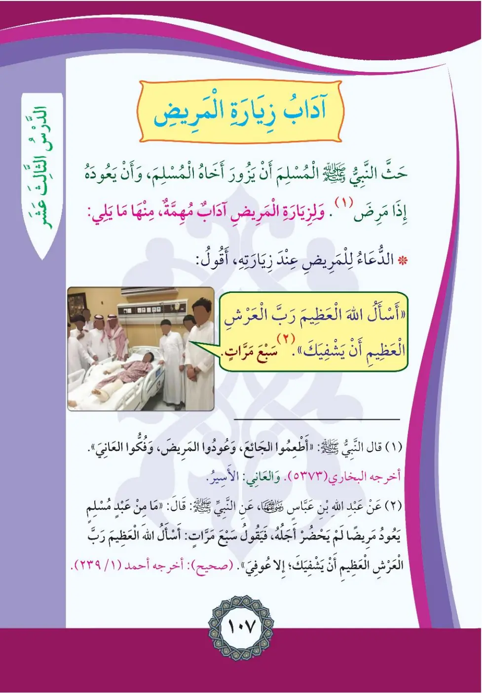
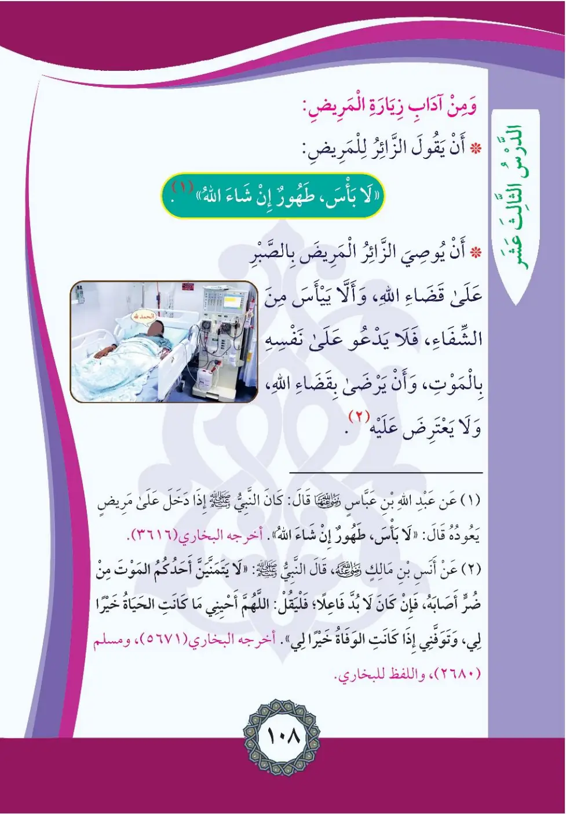

Stage 2·المرحلة الثانية⭐ Unit 1
آدَابُ زِيَارَةِ المَرِيضِ Etiquette of Visiting the Sick
From the Textbookpp. 108–109


حَثَّ النَّبِيُّ الْمُسْلِمَ أَنْ يَزُورَ أَخَاهُ الْمُسْلِمَ، وَأَنْ يَعُودَهُ إِذَا مَرِضَ. وَإِذَا مَرِضْتُ فَمِنْ أَهَمِّ آدَابِ زِيَارَةِ الْمَرِيضِ: الدُّعَاءُ لِلْمَرِيضِ عِنْدَ زِيَارَتِهِ؛ أَقُولُ: «أَسْأَلُ اللَّهَ الْعَظِيمَ، رَبَّ الْعَرْشِ الْكَرِيمِ، أَنْ يَشْفِيَكَ» سَبْعَ مَرَّاتٍ.
Hadda an-nabiyyu al-muslima an yazura akhahu al-muslima wa-an ya'udahu idha marida.
The Prophet urged the Muslim to visit his Muslim brother when he is ill. Among the most important manners of visiting the sick is supplicating for him at the visit; I say seven times: "I ask Allah the Mighty, Lord of the Noble Throne, to cure you."
நோயாளியை சந்தித்து ஏழு முறை "மஹானான அல்லாஹ்விடம், கருணை மிக்க அர்ஷின் இறைவனிடம் உன் நலம் விசாரிக்கிறேன்" என துஆ செய்ய வேண்டும்.
(١) قَالَ النَّبِيُّ صلى الله عليه وسلم: «أَطْعِمُوا الْجَائِعَ، وَعُودُوا الْمَرِيضَ، وَفُكُّوا الْأَسِيرَ». أَخْرَجَهُ الْبُخَارِيُّ (٣٧٣)
At'imu al-ja'i'a, wa-'udu al-marida, wa-fukku al-asira.
The Prophet said: "Feed the hungry, visit the sick, and free the captive." (Bukhari 373)
"பசிப்பவருக்கு உணவளியுங்கள்; நோயாளியை சந்தியுங்கள்; சிறைப்பிடிக்கப்பட்டவரை விடுவியுங்கள்" (புகாரி 373)
(٢) وَعَنْ عَبْدِ اللَّهِ بْنِ عَبَّاسٍ رَضِيَ اللَّهُ عَنْهُمَا عَنِ النَّبِيِّ صلى الله عليه وسلم أَنَّهُ كَانَ يَعُودُ مَرِيضًا لَمْ يَحْضُرْ أَجَلُهُ فَيَقُولُ فِي سَبْعِ مَرَّاتٍ: «أَسْأَلُ اللَّهَ الْعَظِيمَ، رَبَّ الْعَرْشِ الْعَظِيمِ أَنْ يَشْفِيَكَ». (صَحِيحٌ) أَخْرَجَهُ أَحْمَدُ (١/٢٣٩)
Kana ya'udu maridan lam yahdur ajalahu fa-yaqulu fi sab'i marrat.
Ibn Abbas reported that the Prophet used to visit a sick person whose appointed time had not come and would say seven times: "I ask Allah the Mighty, Lord of the Magnificent Throne, to cure you." (Authentic; Ahmad 1/239)
நபி (ஸல்) நோயாளியை சந்தித்து ஏழு முறை இந்த துஆவை கூறுவார்கள் (அஹ்மத் 1/239)
وَمِنْ آدَابِ زِيَارَةِ الْمَرِيضِ: أَنْ يَقُولَ الزَّائِرُ لِلْمَرِيضِ: «لَا بَأْسَ، طَهُورٌ إِنْ شَاءَ اللَّهُ». وَأَنْ يُوصِيَ الزَّائِرُ الْمَرِيضَ بِالصَّبْرِ عَلَى قَضَاءِ اللَّهِ، وَأَلَّا يَيْأَسَ وَأَلَّا يَدْعُوَ عَلَى الشِّفَاءِ، وَيَكُونَ رَاضِيًا بِقَضَاءِ اللَّهِ وَلَا يَعْتَرِضُ عَلَيْهِ.
Wa-min adabi ziyarati al-marid: an yaqula az-Za'iru li-l-marid: La ba's, tahurun in sha'a Allah.
Other manners of visiting the sick:
The visitor says to the patient: "No harm, may it be a purification, if Allah wills."
The visitor advises the sick person to be patient with Allah's decree, not despair or lose hope of healing, and to be content with Allah's decree without objecting to it.
"தீங்கில்லை, இஃன்ஷா அல்லாஹ் இது பாவ மன்னிப்புக்கான காரணம்" என கூறுதலும், நோயாளியை பொறுமைக்கு அறிவுறுத்துதலும்.
(١) وَعَنْ عَبْدِ اللَّهِ بْنِ عَبَّاسٍ رَضِيَ اللَّهُ عَنْهُمَا قَالَ: كَانَ النَّبِيُّ صلى الله عليه وسلم إِذَا دَخَلَ عَلَى مَرِيضٍ يَعُودُهُ قَالَ: «لَا بَأْسَ، طَهُورٌ إِنْ شَاءَ اللَّهُ». أَخْرَجَهُ الْبُخَارِيُّ (٣٦١٦)
Kana an-nabiyyu idha dakhala 'ala maridin ya'uduhu qala: La ba'sa, tahurun in sha'a Allah.
Ibn Abbas reported: Whenever the Prophet visited a sick person he would say: "No harm; may it be a purification, if Allah wills." (Bukhari 3616)
நபி (ஸல்) நோயாளியை சந்தித்தால் "லா பாஸ், த்வுஹுர் இன் ஷா அல்லாஹ்" என கூறுவார்கள் (புகாரி 3616)
(٢) عَنْ أَنَسِ بْنِ مَالِكٍ رَضِيَ اللَّهُ عَنْهُ عَنِ النَّبِيِّ صلى الله عليه وسلم قَالَ: «لَا يَتَمَنَّيْنَ أَحَدُكُمُ الْمَوْتَ مِنْ ضُرٍّ أَصَابَهُ؛ فَإِنْ كَانَ لَا بُدَّ فَاعِلًا فَلْيَقُلْ: اللَّهُمَّ أَحْيِنِي مَا كَانَتِ الْحَيَاةُ خَيْرًا لِي، وَتَوَفَّنِي إِذَا كَانَتِ الْوَفَاةُ خَيْرًا لِي». أَخْرَجَهُ الْبُخَارِيُّ (٦٧١)، وَمُسْلِمٌ (٢٦٨٠)، وَاللَّفْظُ لِلْبُخَارِيِّ
La yatamanna ahadukumu al-mawta min darri asabah.
Anas ibn Malik reported that the Prophet said: "None of you should wish for death because of harm afflicting him; but if he must do so, let him say: O Allah, keep me alive as long as life is better for me, and cause me to die when death is better for me." (Bukhari 671, Muslim 2680)
"தனக்கு நேர்ந்த துன்பத்தின் காரணமாக யாரும் மரணத்தை விரும்பக்கூடாது..." (புகாரி 671, முஸ்லிம் 2680)